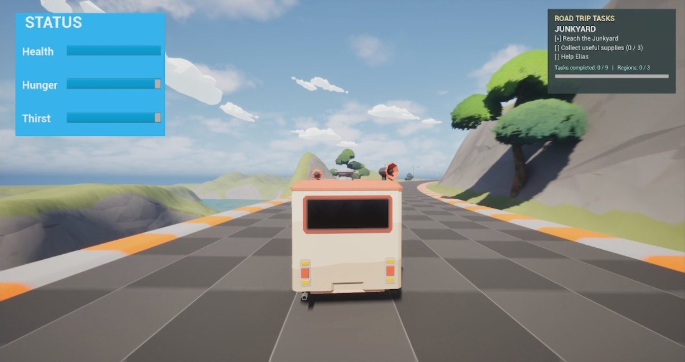
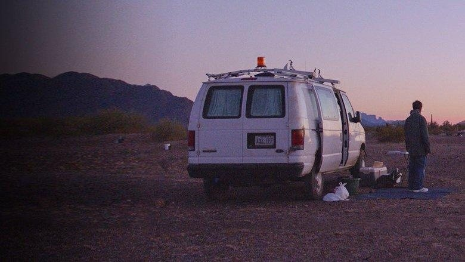
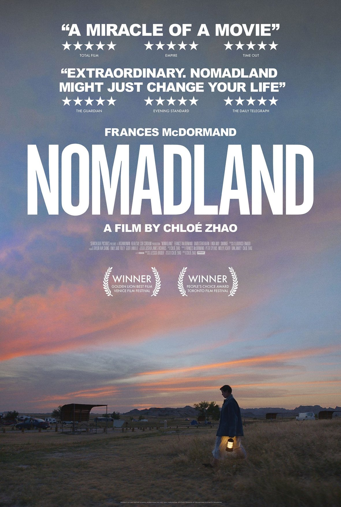
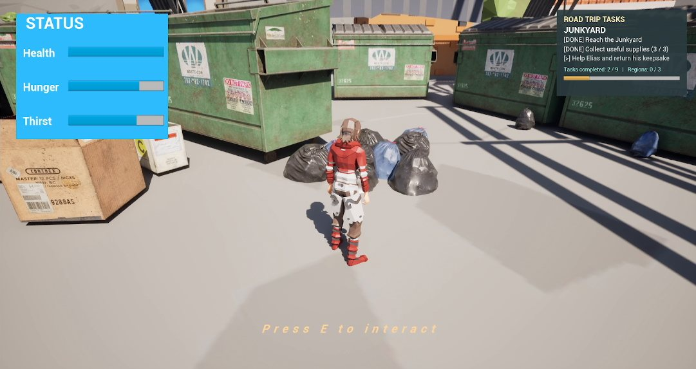
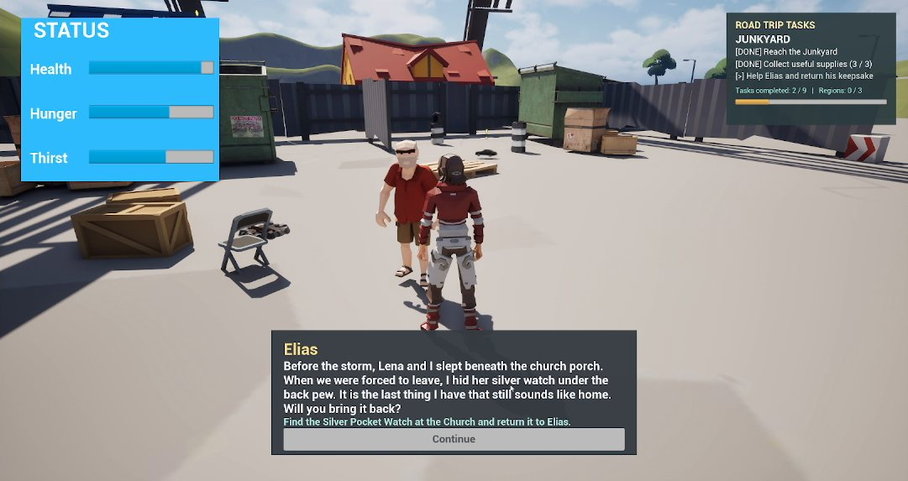
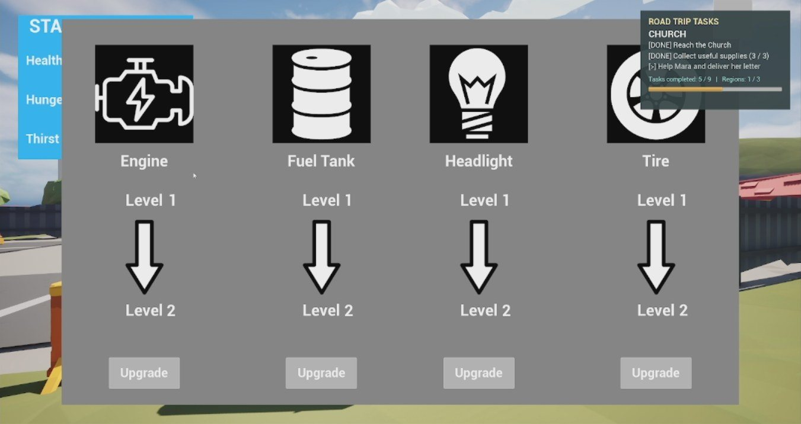
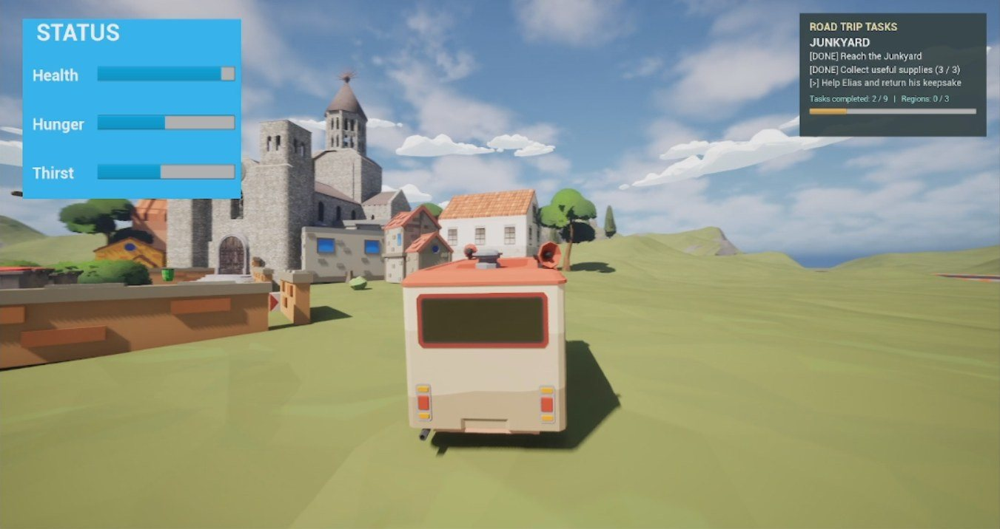

RoadTrip
I built RoadTrip in Unreal Engine 5.8. It is a driving and survival prototype where you can pull over, leave the RV and roll dice to see what comes of searching for supplies. I designed the route and gameplay and built the interactions in Blueprint.
What stayed with me in Nomadland was watching someone look for work out of an RV, meeting other people who were getting by in their own ways. I kept hearing that graduation might mean unemployment, especially as layoffs continued. That uncertainty reminded me of leaving home to study abroad on my own.

Nomadland and life between stops
In Chloé Zhao's Nomadland, Fern takes temporary jobs and meets other people living on the road. The RV gave me a way to link jobs, supplies and places to rest. It also gave me a way to write about handling uncertainty alone while studying abroad.


Nomadland (2020), directed by Chloé Zhao. Film still and poster © Searchlight Pictures.
From racing to living on the road
I began with item races and vehicle upgrades. The idea became a road trip where ordinary stops could carry risk. I kept the die roll and sketched how the same interaction could support searching or working in town.
Early town interaction design
| Factory line | Strength | Risk injury or earn more for moving more goods |
| Restaurant | Social skill | Try getting work as a server |
| Convenience store | Intelligence | Try getting work as a cashier |
| Discarded supplies | Strength | Search a bin with no injury risk in the early table |
Condensed from the early design table. A second roll was proposed, with a higher penalty for failing twice.
Searching for supplies

I wanted players to get out of the RV and look around before deciding what was worth searching. The die roll picks a result, which can change survival stats or yield an item.
In the recorded junkyard sequence, searching a plastic bag turns up bottled water.
A reason to drive back

Elias asks the player to find a silver pocket watch he left near the church. The player drives there to look for it, then brings it back to the junkyard.
I used the conversation to give the player a reason to remember a place and drive back through it.
Connecting the RV and the stops

The RV, search objects and other interactable actors use the same Blueprint interface. When the player gets out, control passes back to the on-foot character.
I gave search results their own data structure for roll ranges, text, changes to health or hunger, and a reward item. The vehicle's upgrade area opens the menu and reads its current upgrade levels.
Building the route
This was my first time using Blueprint. The hard part was figuring out where to put the logic once the vehicle, the character and the interface all needed to know about the same interaction.
I was picking assets one at a time. Once they were together, they were difficult to integrate into the 3D level and did not look like they belonged to the same place. I ended up looking for low-poly assets that fit one another.
The next stop
I want to make an overnight stop inside the RV playable first, then try a work encounter in town. That would let me test whether the drive, the decisions about supplies and the reason to keep going work together over more than one stop.
